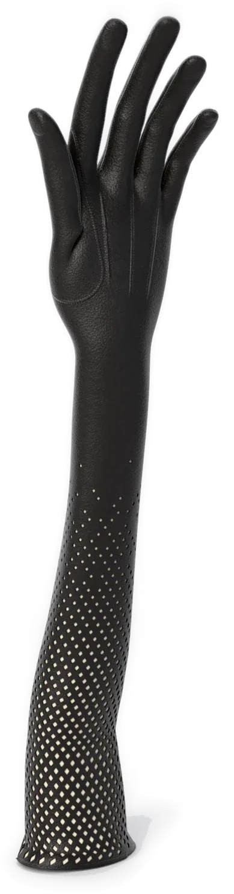
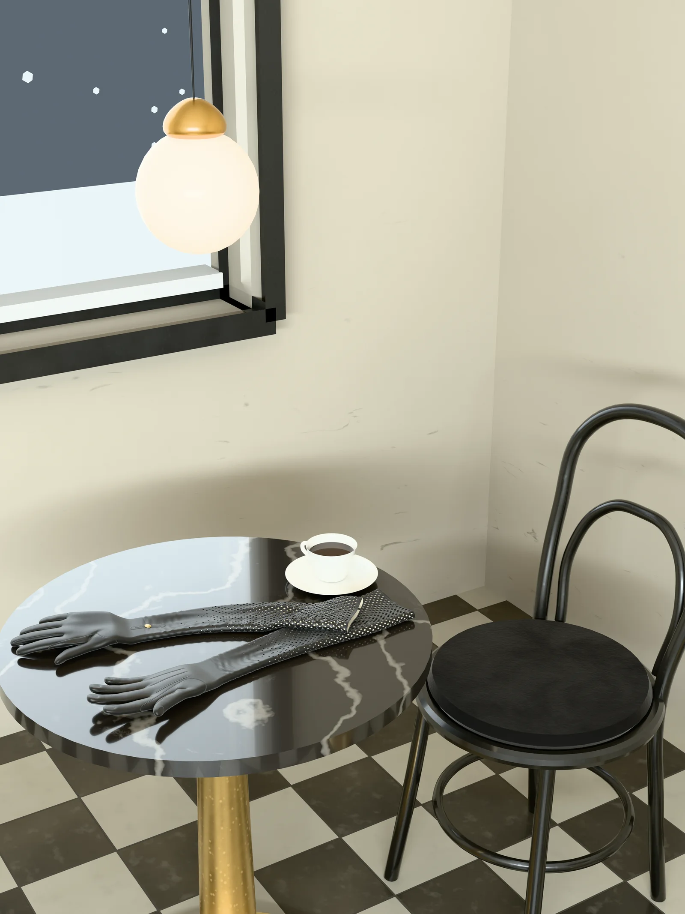
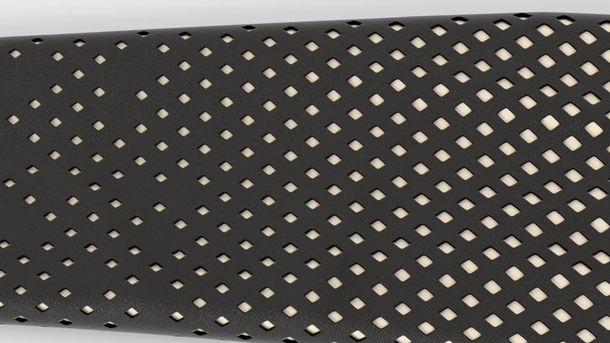

STAND-IN · img/ritornelo/front/master.* (departments/apparel/new-pieces-2026-11/build/opera-gloves/site/opera_gloves_front_16k.png; 16K, 15360 × 8640)
STAND-IN · img/ritornelo/front/master.* (departments/apparel/new-pieces-2026-11/build/opera-gloves/site/opera_gloves_front_16k.png; 16K, 15360 × 8640)
STAND-IN · img/ritornelo/three-quarter/master.* (three-quarter view, 8K; 8K, 7680 × 4320)Where it is going
The café
The chair pulled back, the cup still warm.
Chapter I · Accessories
Ritornelo
Opera gloves
Scroll to walk around it
Chapter I
Ritornelo
Opera gloves
Black lambskin past the elbow, cut with the Veil Coat's net: closed at the wrist and opening as it climbs the arm, cream silk inside. A gold snap with the Ö.
- LEATHER
- BLACK LAMBSKIN
- LINING
- CREAM SILK
- LENGTH
- ABOVE THE ELBOW
- SNAP
- GOLD, THE Ö ENGRAVED
- SIZE
- S · M · L
PRICE ON REQUEST
Keep a seatThe register sees the pre-sale first.
Details
- Pre-sale
- Made to order. We email your delivery date once production is confirmed. Cancel for a full refund any time before production starts.
- Returns
- Exchanges within 14 days of delivery, unused and with tags.
- Care
- Wipe with a soft dry cloth. Keep from rain and heat; if it gets wet, let it dry slowly away from a radiator. Store in its dust bag, stuffed with tissue, out of the light. Leather cleaning by a specialist only. Care
- Size
- The measurements

STAND-IN · img/ritornelo/world/master.* (C3: the last frame, the world plate (the café); 8K, 5760 × 7680)Where it is going · C3
The café
The chair pulled back, the cup still warm.
On the screen in the film, the picture is tomorrow: each piece in the place it is going, with one place kept for someone.
The filmClose

STAND-IN · img/ritornelo/detail-net/master.* (the net opening up the arm, 8K close-up; 8K, 7680 × 4320)The net opening up the arm
The snap
The maker’s notes
Ritornelo, the opera gloves
- Each begins as black lambskin, cut round the hand and arm with one long seam down the little finger’s side.
- It runs 53 cm from fingertip to top edge: 20 cm of hand, 33 cm of arm.
- The leather is solid to 5 cm above the wrist, then the coat’s own net opens, fully open for the last 7 cm.
- Three points are raised on the back of the hand: 60, 66 and 59 mm.
- It closes at the inside of the wrist: a 36 mm slit, a 10 mm gold snap, the mark engraved 7 mm tall.
Inside it: the coat’s cream silk, from the wrist to the top edge.
Read the bookThe packaging
The house lights go down. Black board, cream tissue the colour of the screen, and one gold disc between you and the first scene.
 STAND-IN · img/shared/pack-closed/master.* (packaging/chapter1/renders: closed (the approved final, 3840 px); 8K, 7680 × 4320)
STAND-IN · img/shared/pack-closed/master.* (packaging/chapter1/renders: closed (the approved final, 3840 px); 8K, 7680 × 4320)The closed box, its band and the gold disc
 STAND-IN · img/shared/pack-open/master.* (packaging/chapter1/renders: open (the approved final, 3840 px); 8K, 7680 × 4320)
STAND-IN · img/shared/pack-open/master.* (packaging/chapter1/renders: open (the approved final, 3840 px); 8K, 7680 × 4320)The open box, the piece folded in cream tissue
 STAND-IN · img/shared/pack-disc/master.* (packaging/chapter1/renders: disc (the approved final, 3840 px); 8K, 7680 × 4320)
STAND-IN · img/shared/pack-disc/master.* (packaging/chapter1/renders: disc (the approved final, 3840 px); 8K, 7680 × 4320)The gold disc on the band
 STAND-IN · img/shared/pack-shopping/master.* (packaging/chapter1/renders: shopping (the approved final, 3840 px); 8K, 7680 × 4320)
STAND-IN · img/shared/pack-shopping/master.* (packaging/chapter1/renders: shopping (the approved final, 3840 px); 8K, 7680 × 4320)The shopping bag with cream tissue
 STAND-IN · img/shared/pack-trims/master.* (packaging/chapter1/renders: trims (the approved final, 3840 px); 8K, 7680 × 4320)
STAND-IN · img/shared/pack-trims/master.* (packaging/chapter1/renders: trims (the approved final, 3840 px); 8K, 7680 × 4320)The hang tag, the card and the sealed envelope